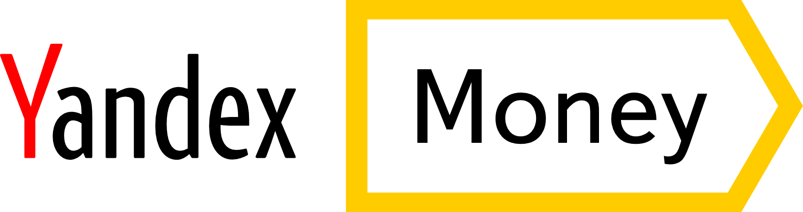

Professional Summary
Staff Software Engineer with 11+ years of expertise in backend development and cloud architecture, including 7 years of deep Java specialization.
Proven track record of delivering high-impact projects at leading tech companies,
with extensive experience in cloud development, dev tools (CLI, Monitoring), and CI/CD.
Demonstrated success in technical leadership, managing a team of 5 engineers, and driving R&D initiatives.
Recognized for technical excellence through internal speaking engagements and knowledge sharing sessions.
Passionate about engineering excellence and delivering high-quality products that drive business impact.
Work Experience
Staff Software Engineer
September 2020 - Present
Technical Lead and key team member of Azul Intelligence Cloud
Lead a cross-functional team of 5 engineers
and have also led Virtual Teams on specific areas/projects, mentored intern/junior level engineers
Architected and developed the Forwarder service -
a stateless network service handling 10K+ concurrent JVM connections to Azul Intelligence Cloud,
supporting scaling, monitoring, and high availability for seamless customer VM fleet management
Developed and implemented Monitoring as Code on top of AWS CloudWatch Dashboards,
which allows us to automatically update infrastructure monitoring by detecting changes in AWS CloudFormation resources,
as well as automatically update Business Dashboards by checking for changes in business logic
Enhanced Azul Vulnerability Detection (AVD) algorithms,
resulting in 30% improvement in detection accuracy and reducing false positives due to ambiguities
Designed and implemented Component Inventory and JVM Inventory features,
enabling multi-dimensional analysis of customer fleets and component dependencies, processing 50K+ JVMs daily with real-time updates
Co-developed CQL (CRS Query Language), a SQL-like domain language for ElasticSearch,
drastically reducing query complexity and increasing developer productivity
Co-developed Code Inventory feature for Runtime Code Analysis,
enabling customers to identify used and unused/dead code across their codebase, resulting in reduction in technical debt and improved code maintainability
Actively contributed to building productive and efficient CI/CD pipelines
Provided direct technical support to enterprise customers, debugging production issues and implementing quick fixes
Senior Java Developer

YooMoney (formerly Yandex.Money)
January 2018 - September 2020
Led development of Loyalty Program project implementing cashback and bonus rewards, integrated with Yandex.Plus subscription system, resulting in 40% increase in user engagement
Architected and implemented Multicurrency Account System supporting multiple payment methods and currencies
Developed Auto Payment System for government fines and subscriptions, reducing manual payment processing and improving user experience
Redesigned and enhanced the Yandex Wallet main page including payment history, favorites, subscriptions and auto payments, improving system performance
Implemented integration with government and non-government services
Established CI/CD pipelines using Gradle, Jenkins, and Ansible, reducing deployment time and improving code quality
Enhanced credit system functionality and implemented special loyalty program for Yandex.Phone device
Notable Projects
Forwarder - stateless network service
Netty + Vanilla Java, Maven, Authorization & Security, Proxy, TLS 1.2/1.3, HTTP/1.1 & HTTP/2, Monitoring, Docker
Built the scalable, high-performance network service to handle 10K+ concurrent JVM connections
Implemented fault tolerance and automatic recovery mechanisms
Developed secure "bridge" between private and public networks
Monitoring as Code
Java 17, Gradle, AWS CDK, AWS CloudWatch, AWS CloudFormation, CI/CD pipelines, Testing
Automatically update infrastructure monitoring by detecting changes in AWS CloudFormation resources,
as well as automatically update Business Dashboards by checking for changes in business logic
AWS CloudWatch Dashboards do not require manual or configuration file maintenance
Ability to test infrastructure and business metrics, as well as automatically generated dashboards
Drastically reduced the complexity of maintaining monitoring and introduced synchronization with the codebase/infrastructure